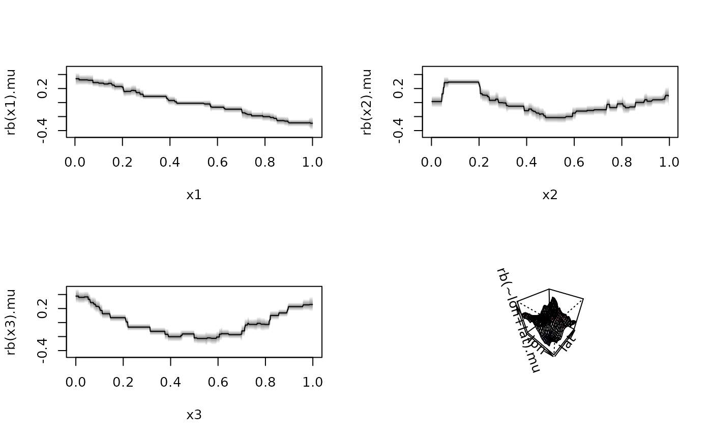

rb.RdThis smooth constructor implements random bits model terms. Note that this is experimental.
## Linear smooth constructor.
rb(..., k = 50)
## For mgcv.
# S3 method for randombits.smooth.spec
smooth.construct(object, data, knots, ...)For function rb() a formula of the type ~x1+x2+x3 that specifies
the covariates that should be modeled.
Integer, number of radnom bit columns in the design matrix.
See smooth.construct.
Function rb(), similar to function s a simple smooth specification
object.
if (FALSE) ## Simulate data.
set.seed(123)
d <- GAMart()
## Estimate model.
f <- num ~ rb(x1) + rb(x2) + rb(x3) + rb(~lon+lat)
b <- bamlss(f, data = d)
#> AICc -21.2792 logPost 634.6085 logLik 50.3258 edf 36.694 eps 0.9571 iteration 1
#> AICc -130.004 logPost 696.6471 logLik 115.4859 edf 45.762 eps 0.3027 iteration 2
#> AICc -152.558 logPost 724.1035 logLik 140.2322 edf 56.587 eps 0.2419 iteration 3
#> AICc -155.353 logPost 727.0658 logLik 148.2131 edf 61.692 eps 0.0668 iteration 4
#> AICc -155.847 logPost 727.5953 logLik 150.2628 edf 63.069 eps 0.0155 iteration 5
#> AICc -155.992 logPost 727.6831 logLik 150.5223 edf 63.212 eps 0.0021 iteration 6
#> AICc -156.018 logPost 727.6915 logLik 150.5551 edf 63.227 eps 0.0003 iteration 7
#> AICc -156.021 logPost 727.6922 logLik 150.5595 edf 63.229 eps 0.0000 iteration 8
#> AICc -156.021 logPost 727.6922 logLik 150.5595 edf 63.229 eps 0.0000 iteration 8
#> elapsed time: 0.68sec
#> Starting the sampler...
#>
#> | | 0% 11.78sec
#> |* | 5% 11.11sec 0.58sec
#> |** | 10% 10.66sec 1.18sec
#> |*** | 15% 10.05sec 1.77sec
#> |**** | 20% 9.60sec 2.40sec
#> |***** | 25% 9.01sec 3.00sec
#> |****** | 30% 8.49sec 3.64sec
#> |******* | 35% 7.90sec 4.25sec
#> |******** | 40% 7.27sec 4.85sec
#> |********* | 45% 6.67sec 5.46sec
#> |********** | 50% 6.06sec 6.06sec
#> |*********** | 55% 5.46sec 6.68sec
#> |************ | 60% 4.85sec 7.27sec
#> |************* | 65% 4.24sec 7.88sec
#> |************** | 70% 3.64sec 8.49sec
#> |*************** | 75% 3.03sec 9.10sec
#> |**************** | 80% 2.43sec 9.70sec
#> |***************** | 85% 1.82sec 10.34sec
#> |****************** | 90% 1.21sec 10.93sec
#> |******************* | 95% 0.61sec 11.54sec
#> |********************| 100% 0.00sec 12.13sec
plot(b)
